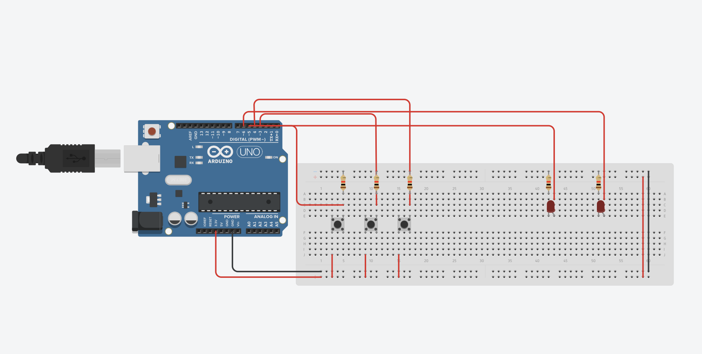
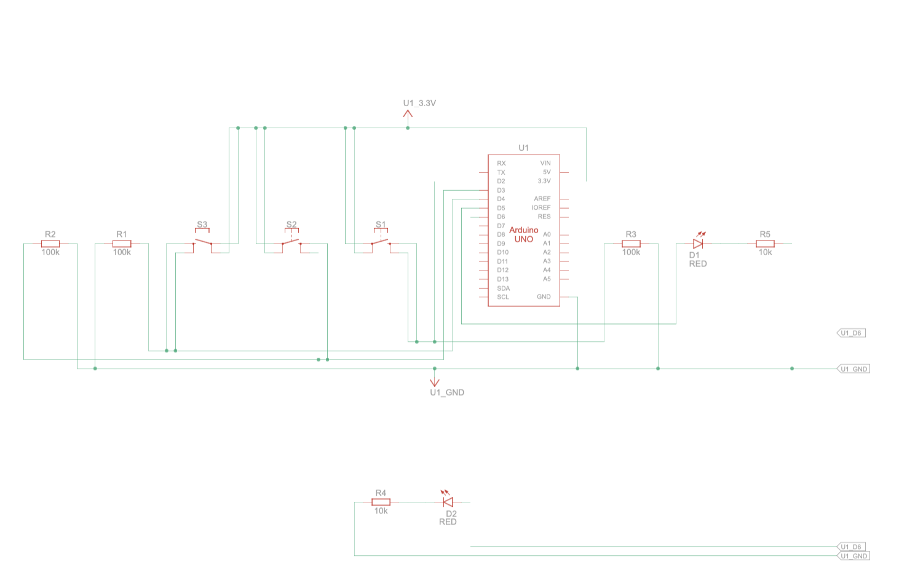

Documentation
The intention of this project is to create a simple calculator that is able to compute the sum of two single-digit numbers. We started by first building it on a simulation program online to make sure that the logic was correct.


After we were able to successfully build the calculator on the simulation program, we then moved on to building the physical version. Finally, we implemented the following code:
int tensDigitPin = 5;
int onesDigitPin = 6;
int firstInputPin = 2;
int secondInputPin = 3;
int calculatePin = 4;
int firstNumber = 0;
int secondNumber = 0;
int firstButtonPreviousState = LOW;
int secondButtonPreviousState = LOW;
int calculateButtonPreviousState = LOW;
void setup(){
pinMode(tensDigitPin, OUTPUT);
pinMode(onesDigitPin, OUTPUT);
pinMode(firstInputPin, INPUT);
pinMode(secondInputPin, INPUT);
pinMode(calculatePin, INPUT);
Serial.begin(9600);
}
int firstButtonState;
int secondButtonState;
int calculateButtonState;
void loop(){
firstButtonState = digitalRead(firstInputPin);
secondButtonState = digitalRead(secondInputPin);
calculateButtonState = digitalRead(calculatePin);
if(firstButtonState != firstButtonPreviousState && firstButtonState == HIGH){
firstNumber = (firstNumber + 1) % 10;
}
if(secondButtonState != secondButtonPreviousState && secondButtonState == HIGH){
secondNumber = (secondNumber + 1) % 10;
}
if(calculateButtonState != calculateButtonPreviousState && calculateButtonState == HIGH){
int result = firstNumber + secondNumber;
Serial.print(result);
int tensDigit = result / 10;
int onesDigit = result % 10;
for(int i = 0; i < tensDigit; i++){
digitalWrite(tensDigitPin, HIGH);
delay(500);
digitalWrite(tensDigitPin, LOW);
delay(500);
}
for(int i = 0; i < onesDigit; i++){
digitalWrite(onesDigitPin, HIGH);
delay(500);
digitalWrite(onesDigitPin, LOW);
delay(500);
}
firstNumber = 0;
secondNumber = 0;
}
secondButtonPreviousState = secondButtonState;
firstButtonPreviousState = firstButtonState;
calculateButtonPreviousState = calculateButtonState;
delay(50);
}